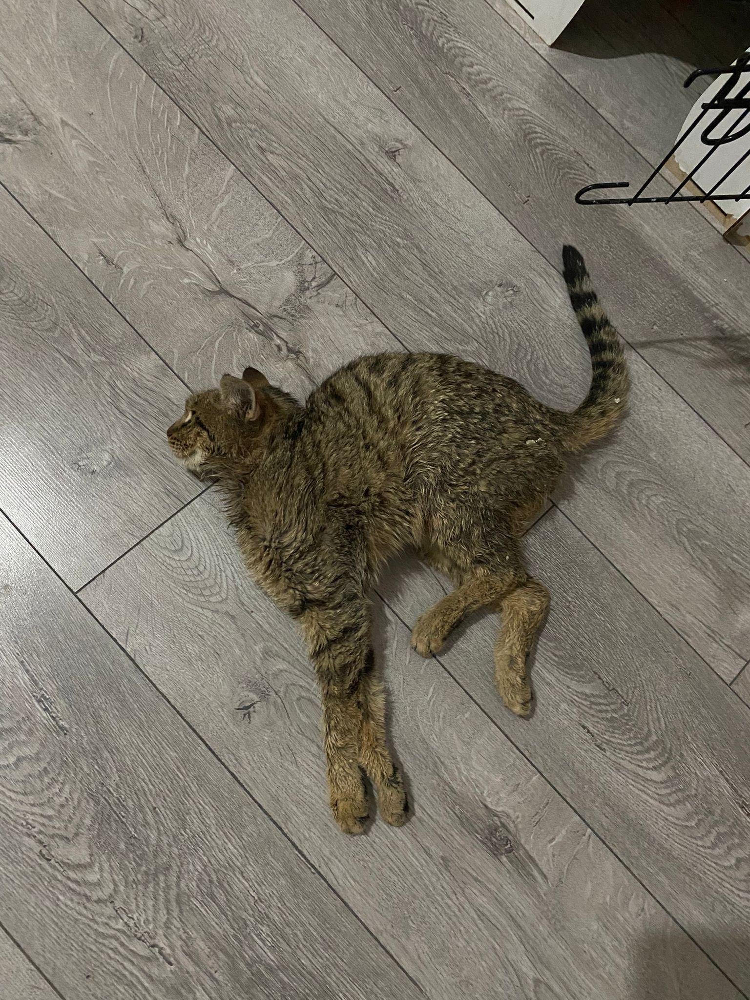

"Sevgi ve kararlılıkla aşılamayacak zorluk yoktur..."
Paşa kedimiz beyninde sıvı birikimi sonucu sokakta dengesini kaybeder vaziyette bulunduğunda, durumunun ciddiyetinin farkındaydık. İhbar gelir gelmez harekete geçtik. Ameliyatının çok pahalı olması ve farklı bir şehirde yapılacak olması bizi durduramadı.
Hayvan severlerimizin destekleriyle Paşa'yı Samsun'a götürdük ve gerekli ameliyatını yaptırdık. Beynine şant cihazı takılan Paşa'mız, zorlu tedavi sürecini başarıyla atlattı. Şimdi yeni yuvasında sağlıklı, mutlu ve huzurlu bir yaşam sürüyor.